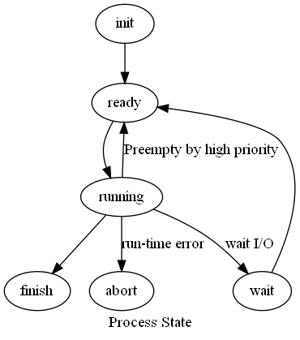

定義
當process被迫離開CPU時(可能是Interrupt or preempted)，須將當時的processes information(PCB, Process Control Block)儲存, 並載入新的Process之information。
OS 如何運作
OS將process之CPU register內容及其他有關information存入memory中，再將新的process有的information載入CPU register，且OS需將目前的PCB pointer指向新的PCB的記憶體位址，最後再將控制權交給新的process。
若CPU register數量夠多，不同process可以占用不同register set，此時，OS只需要轉換register set pointer去新的位址就可以完成context switch。
可能發生context switch的地方
running 到 wait: 等待I/O
running 到 ready: 被高優先權的process搶走
running 到 abort: 執行發生錯誤

New to Ready: Long-term scheduler
Ready to Run: Short-term scheduler